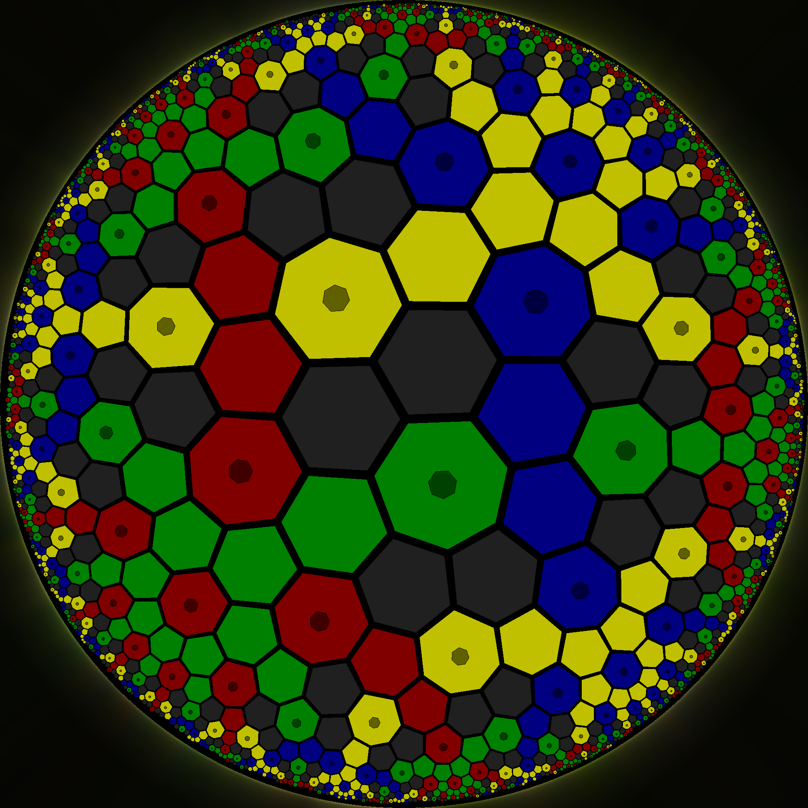

 Musical Artwork
Musical Compositions
I have heard many people talk about connections between mathematics and music. A lot of it gets very abstract, with stuff about tempo and pitch and harmonies and whatnot... I do not totally discredit that, and I think it is worth considering.
But I am much more direct than that. My music was made with Python scripts (that generated MIDI files; I had to research the file format myself), which combined with macOS GarageBand creates mathematically precise patterns. The background "ticking" in "Bytes", for example, is just counting in binary. (You can probably figure out what the other patterns are yourself, if you listen.)
As of July 2022, I do not have a BandCamp, Soundcloud, or other account. So far it has not been worth the trouble, but I am open to the possibility.
I call this album "Mathematical Songs" just because that's what they are and I never bothered to change it.

Bytes (4:20)
This one I consider to be my best work. Like several of my songs, the time is supposed to be a perfect power (28 seconds = 256 s = 4m16s) but GarageBand adds a few extra seconds to let the final sound die out. Oh well.
As I said above, the background ticking is counting in binary from 0 to 255 and almost everything else is built around that concept, just in new ways each time.
Binary Tree (4:16)
Another one based on powers of 2 that pre-dates "Bytes". It has a much simpler build-up of complexity than Bytes' three instruments coming in and out, followed by a mostly symmetrical tear-down in the second half.
The tune is based on the A-B-A-C-A-B-A-D-... pattern (or, as the case may be, C-D-C-E-C-D-C-F-...), where each iteration you take the previous sequence, then put one note higher (shown in bold, then do the previous thing all over again:
- C
- C-D-C
- C-D-C-E-C-D-C
- C-D-C-E-C-D-C-F-C-D-C-E-C-D-C
And so on. I believe the background notes are 10 iterations of this (1'024 notes if you count a nearly imperceptible 0.25 second gap at the beginning), but the foreground (E, FFFF E, GGGG E, FFFF E, ...) is only 8 iterations (256 measures, one per second) and skips the first and last 16 seconds. The rarer patterns, of course, are slightly more spectacular.
Low Bases (1:02)
A slightly less impressive one that combines a digit-cumulative base 3 count (0 to 26, but the digits are the jumps between notes rather than the notes themselves) with a standard base 5 count (0 to 24) and a binary count (0 to 15). They are all centered around the same point in time.
Everything is Falling Apart (2:39)
This one is different because rather than a precise mathematical formula, the notes here are decided by a random process to make the notes start high and slowly fall in an erratic fashion as chaos takes over... Unlike previous songs, this one lasted as long as the random process made it last, but I believe that it is still 120 BPM.
Des Lois de Prob (1:25)
The title means "(some) probability distributions". There are 7 in total, although the uniform distribution is extremely subtle and even Poisson and (approximated) Cantor are easy to miss. There are two that look like Gaussians, but one is actually a Student t distribution with one degree of freedom.
All of the distributions are represented by their magnitude (of the density or mass function) being proportional to the "velocity" (a MIDI term that roughly corresponds to loudness in some way) of the note across the time spectrum. The main song is 81 seconds (which only came in to play for the Cantor distribution approximation).
Seven Five Three Two
A simple one-minute (210 BPM) song designed to loop, about the first four primes. I've requested this be included as a song in the game HyperRogue by Zeno Rogue Games. We'll see what comes of it.
Double Descent Fractal
A song inspired by a common practice I've seen in a lot of songs, where they have three or four repetitions of the same melody but going down a note or two each time.